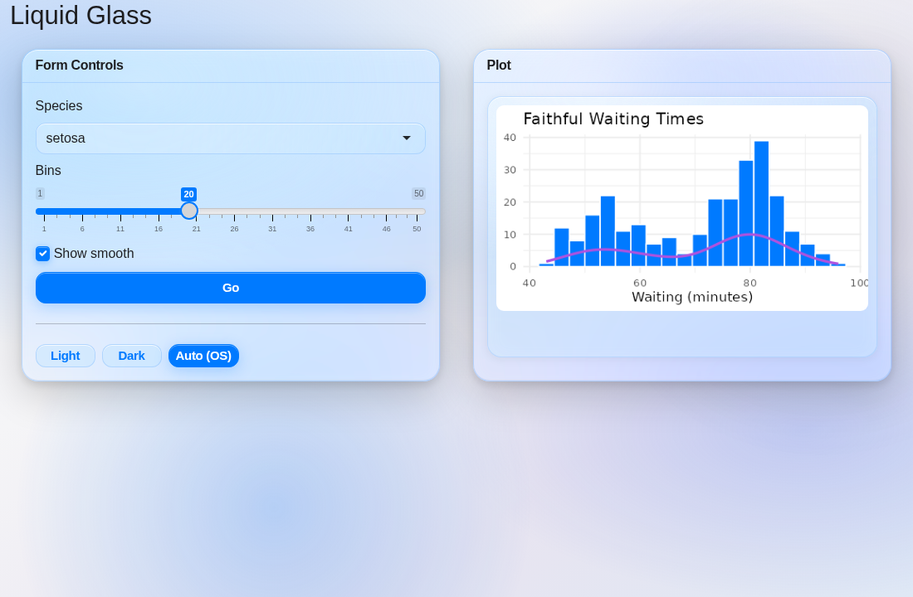
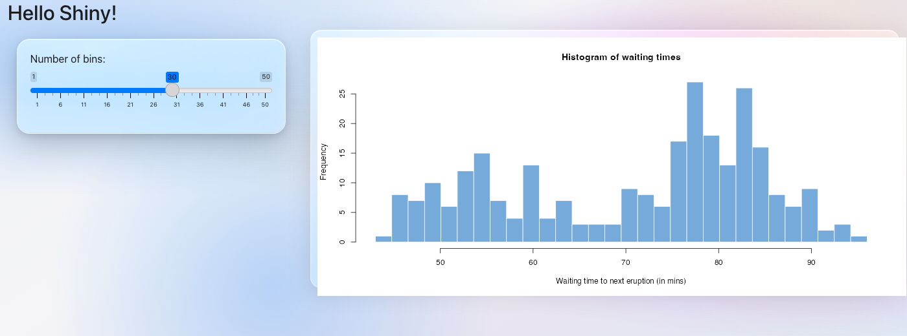
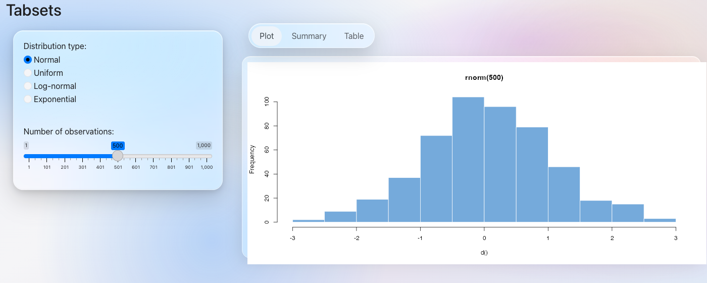
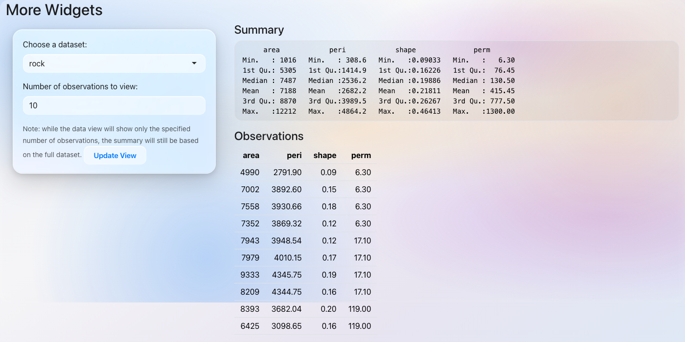
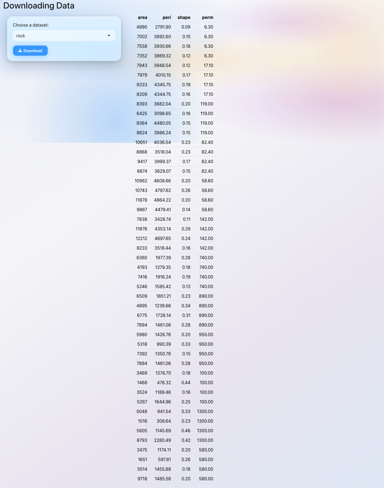
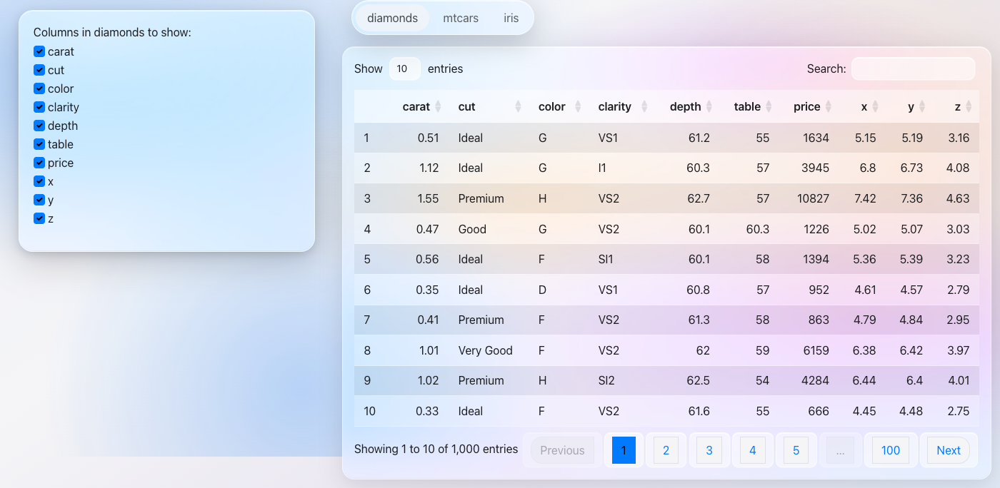
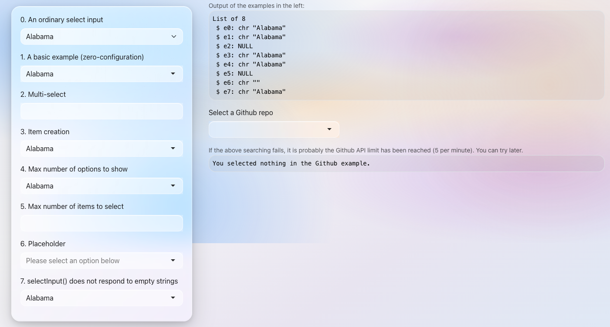
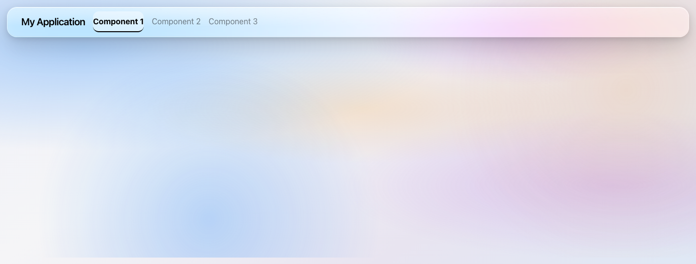
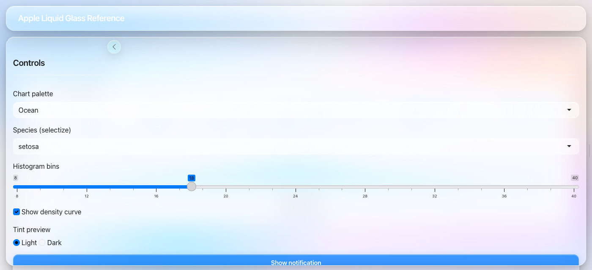

Apple’s Liquid Glass aesthetic for R Shiny — one function, built on bslib.

Single-file app
Save as app.R and run with shiny::runApp():
library(shiny)
library(shinyglass)
ui <- fluidPage(
theme = glass_theme(),
titlePanel("Liquid Glass"),
selectInput("color", "Favorite color", c("Blue", "Purple", "Orange")),
sliderInput("n", "Number of bars", 5, 30, 15),
plotOutput("plot")
)
server <- function(input, output, session) {
output$plot <- renderPlot({
barplot(
seq_len(input$n),
col = "#007AFF",
border = NA,
main = paste("You chose", input$color)
)
})
}
shinyApp(ui, server)You only need shiny and shinyglass. You do not need to load bslib — glass_theme() returns a bslib theme object that fluidPage() (and other Shiny page functions) understand automatically.
Load bslib only if you want its UI helpers like card() or page_fillable(). Standard Shiny inputs, buttons, and layouts work out of the box.
Options
glass_theme(
preset = "dark", # "light" or "dark"
primary = "#007AFF",
blur = 28,
saturation = 200
)Demo
The bundled demo uses bslib cards and ggplot2. Install them first if needed:
install.packages(c("bslib", "ggplot2"))
shiny::runApp(system.file("examples", "demo-app.R", package = "shinyglass"))Apple Liquid Glass reference app (sidebar overlay, tinting, DataTables):
shiny::runApp(system.file("examples", "apple-glass-reference.R", package = "shinyglass"))Gallery
Screenshots from official Shiny examples with glass_theme() applied.
 |
 |
 |
 |
| fluidPage + sidebar | Pill tab bar | actionButton | downloadButton |
 |
 |
 |
 |
| DataTables | selectizeInput | navbarPage | page_sidebar |